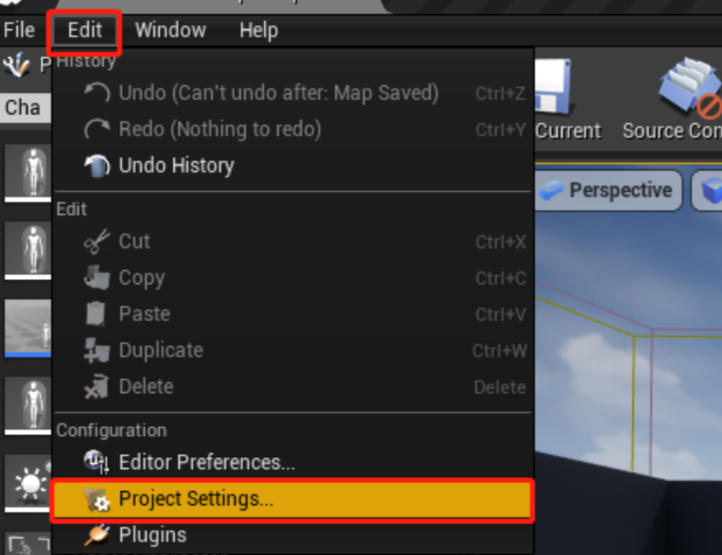

为玩家绑定键盘事件
在本教程中，让我们为角色添加一个 Action 键盘响应。首先，我们需要添加一个名为 Action 的输入选项，并将其绑定到键盘输入或控制器按钮上。在本例中，我们将把 Action 输入绑定到键盘的 F 键。转到 编辑>项目设置（Edit > Project Settings） 。然后选择 Input 选项。单击 Action Mappings 旁边的加号。调用新的输入 Action 并从下拉菜单中选择 F 。


在 xxxCharacter.h 文件中，在 OnFire 方法下添加 OnAction 方法。
protected:
/** Fires a projectile. */
void OnFire();
// on action
void OnAction();
接下来，在 xxxCharacter.cpp 文件中，我们将找到 SetupPlayerInputComponent 函数，并将 Action 映射与 OnAction 函数连接起来。我们之后马上会创建 OnAction 函数。我通过 PlayerInputComponent 中 的 BindAction 函数将控制器连接到 OnAction 函数。在这个例子中，每次按下键盘 F 时都会调用 OnAction 函数
PlayerInputComponent->BindAction("Action", IE_Pressed, this, &AUnrealCPPCharacter::OnAction);
最后，我们将添加 OnAction 函数。这将是一个非常简单的函数，用于将消息记录到屏幕上。
void AUnrealCPPCharacter::OnAction()
{
if (GEngine)
{
GEngine->AddOnScreenDebugMessage(-1, 5.f, FColor::Red, TEXT("I'm Pressing Action"));
}
}
游戏运行后，按下 F 键的效果图如下

指定的任意的 Pawn 绑定键盘相应事件
除了给玩家接收键盘响应，也可以给我们指定的任意的 Pawn 绑定键盘相应事件
首先，我们可以新建一个 MyPawn 类，注意其继承自 Pawn 类
MyPawn.h
#pragma once
#include "CoreMinimal.h"
#include "GameFramework/Pawn.h"
#include "MyPawn.generated.h"
UCLASS()
class UNREALCPP_API AMyPawn : public APawn
{
GENERATED_BODY()
public:
// Sets default values for this pawn's properties
AMyPawn();
protected:
// Called when the game starts or when spawned
virtual void BeginPlay() override;
public:
// Called every frame
virtual void Tick(float DeltaSeconds) override;
// Called to bind functionality to input
virtual void SetupPlayerInputComponent(class UInputComponent* InputComponent) override;
UPROPERTY(EditAnywhere)
USceneComponent* OurVisibleComponent;
// Input functions
void Move_XAxis(float AxisValue);
void Move_YAxis(float AxisValue);
void StartGrowing();
void StopGrowing();
// Input variables
FVector CurrentVelocity;
bool bGrowing;
};
接着在编辑器中，我们创建一个名为 Grow 的 Action 映射，并将其绑定到 G 键， 用于缩放。然后创建两个 Axis 映射用于平移，并将它们命名为 MoveX 和 MoveY 。将轴的比例分别设置为 1 和 -1 。
1. MoveX
I: Scale 1.0
K: Scale -1.0
2. MoveY
J: Scale -1.0
L: Scale 1.0
3. Grow
G
完整的 cpp 代码如下
#include "MyPawn.h"
#include "Camera/CameraComponent.h"
#include "Components/InputComponent.h"
#include "Components/StaticMeshComponent.h"
// Sets default values
AMyPawn::AMyPawn()
{
// Set this pawn to call Tick() every frame. You can turn this off to improve performance if you don't need it.
PrimaryActorTick.bCanEverTick = true;
// Set this pawn to be controlled by the lowest-numbered player
AutoPossessPlayer = EAutoReceiveInput::Player0;
// Create a dummy root component we can attach things to.
RootComponent = CreateDefaultSubobject<USceneComponent>(TEXT("RootComponent"));
// Create a camera and a visible object
UCameraComponent* OurCamera = CreateDefaultSubobject<UCameraComponent>(TEXT("OurCamera"));
OurVisibleComponent = CreateDefaultSubobject<UStaticMeshComponent>(TEXT("OurVisibleComponent"));
// Attach our camera and visible object to our root component. Offset and rotate the camera.
OurCamera->SetupAttachment(RootComponent);
OurCamera->SetRelativeLocation(FVector(-250.0f, 0.0f, 250.0f));
OurCamera->SetRelativeRotation(FRotator(-45.0f, 0.0f, 0.0f));
OurVisibleComponent->SetupAttachment(RootComponent);
}
// Called every frame
void AMyPawn::Tick(float DeltaTime)
{
Super::Tick(DeltaTime);
// Handle growing and shrinking based on our "Grow" action
{
float CurrentScale = OurVisibleComponent->GetComponentScale().X;
if (bGrowing)
{
// Grow to double size over the course of one second
CurrentScale += DeltaTime;
}
else
{
// Shrink half as fast as we grow
CurrentScale -= (DeltaTime * 0.5f);
}
// Make sure we never drop below our starting size, or increase past double size.
CurrentScale = FMath::Clamp(CurrentScale, 1.0f, 2.0f);
OurVisibleComponent->SetWorldScale3D(FVector(CurrentScale));
}
// Handle movement based on our "MoveX" and "MoveY" axes
{
if (!CurrentVelocity.IsZero())
{
FVector NewLocation = GetActorLocation() + (CurrentVelocity * DeltaTime);
SetActorLocation(NewLocation);
}
}
}
// Called to bind functionality to input
void AMyPawn::SetupPlayerInputComponent(UInputComponent* PlayerInputComponent)
{
Super::SetupPlayerInputComponent(InputComponent);
// Respond when our "Grow" key is pressed or released.
InputComponent->BindAction("Grow", IE_Pressed, this, &AMyPawn::StartGrowing);
InputComponent->BindAction("Grow", IE_Released, this, &AMyPawn::StopGrowing);
// Respond every frame to the values of our two movement axes, "MoveX" and "MoveY".
InputComponent->BindAxis("MoveX", this, &AMyPawn::Move_XAxis);
InputComponent->BindAxis("MoveY", this, &AMyPawn::Move_YAxis);
}
void AMyPawn::Move_XAxis(float AxisValue)
{
// Move at 100 units per second forward or backward
CurrentVelocity.X = FMath::Clamp(AxisValue, -1.0f, 1.0f) * 100.0f;
}
void AMyPawn::Move_YAxis(float AxisValue)
{
// Move at 100 units per second right or left
CurrentVelocity.Y = FMath::Clamp(AxisValue, -1.0f, 1.0f) * 100.0f;
}
void AMyPawn::StartGrowing()
{
bGrowing = true;
}
void AMyPawn::StopGrowing()
{
bGrowing = false;
}
效果图为